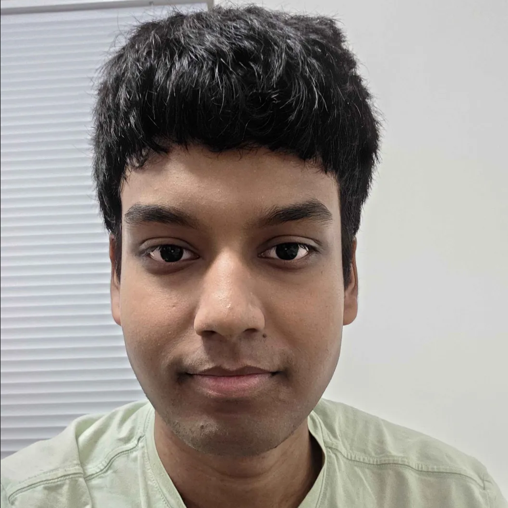
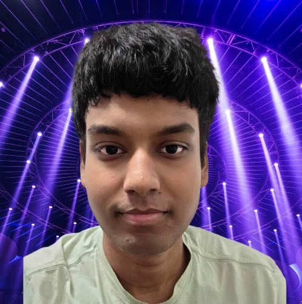
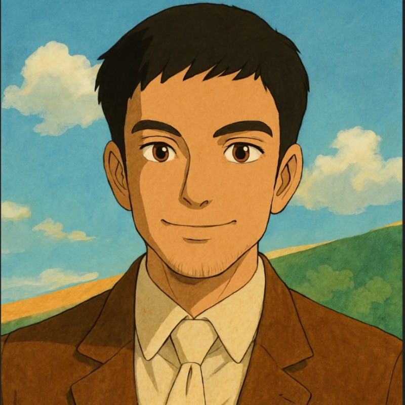

Projects
2025
FPGA Live Video Streaming Pipeline
Joanna Li, Ayush Barik
ECE385 Class Project
Engineered embedded quantized live video streaming pipeline on a Spartan-7 FPGA to transmit data from an OV7670 camera, optimized for low power (0.35W) and minimal resources (813 LUTs, 28 BRAM, 309 Flip-Flops). Implemented additional video filters and on-screen sprites.
Tech Stack: Verilog, FPGA, Spartan-7, OV7670, VGA
2024

MeSeek: AI-Powered Personal Assistant
Generative AI, Computer Vision, Natural Language Processing
An intelligent personal assistant that combines computer vision and NLP to help users find and organize their digital content. Built with state-of-the-art transformer models and custom fine-tuning techniques.
Tech Stack: Python, PyTorch, Transformers, OpenCV, FastAPI

Neural Architecture Search for Audio Generation
Deep Learning, Audio Processing, Neural Architecture Search
Research project exploring automated neural architecture design for audio generation tasks. Developed novel search algorithms that outperform existing methods on multiple audio datasets.
Tech Stack: TensorFlow, Librosa, AutoML, CUDA
2023

Real-time Collaborative Code Editor
Full-stack Web Development, Real-time Communication
A collaborative code editor with real-time synchronization, built using modern web technologies. Supports multiple programming languages and includes features like syntax highlighting, version control, and live collaboration.
Tech Stack: React, Node.js, WebSocket, MongoDB, Docker

Procedural World Generator
Game Development, Procedural Generation, Graphics Programming
A procedural world generation system for a 2D adventure game. Features dynamic terrain generation, weather systems, and AI-driven NPC behavior. Built with custom algorithms for realistic and engaging game worlds.
Tech Stack: Unity, C#, HLSL, Procedural Generation